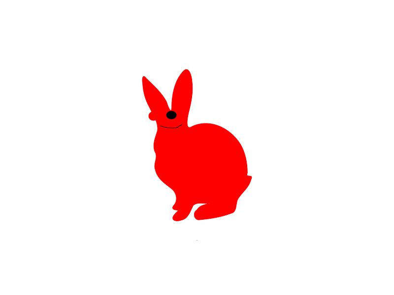

<!DOCTYPE html>
<html lang="en">
  <head>
    <meta charset="UTF-8" />
    <meta name="viewport" content="width=device-width, initial-scale=1.0" />
    <link rel="stylesheet" href="styles.css" />
    <title>Document</title>
  </head>
  <body>
    <ul class="ul">
      <li class="li"></li>
      <li class="li"></li>
      <li class="li"></li>
      <li class="li"></li>
      <!-- <li class="li"></li> -->
    </ul>

    <!-- svg>use - комбінація працює з спрайтами -->
    <!--./symbol-defs.svg - шлях до файлу symbols-defs.svg  -->
    <!--# - селектор id -->
    <!-- icon-diagram - id іконки яку ми хочемо вставити(це id можна дізнатись у файлику symbol-defs.svg ) -->

    <!-- щоб стилювати SVG - ми маємо дати клас саме тегу svg -->
    <svg class="diagram">
      <use href="./symbol-defs.svg#icon-diagram"></use>
    </svg>
    <!-- SVG за допомогою тегів  -->

    <svg
      width="200"
      height="200"
      xmlns="http://www.w3.org/2000/svg"
      style="outline: 1px solid black"
    >
      <!-- fill - властивість яка впливає на колір вашої SVG -->
      <circle r="50" cx="50%" cy="50%" fill="green"></circle>
    </svg>
  </body>
</html>
